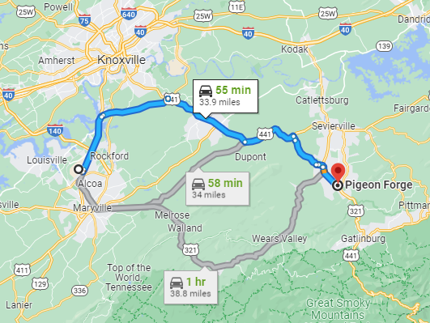
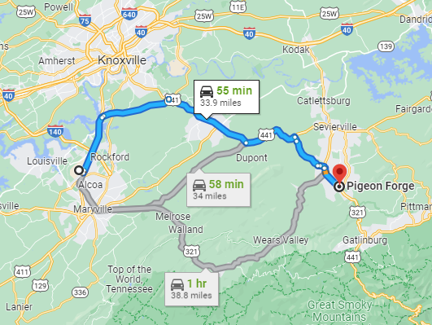
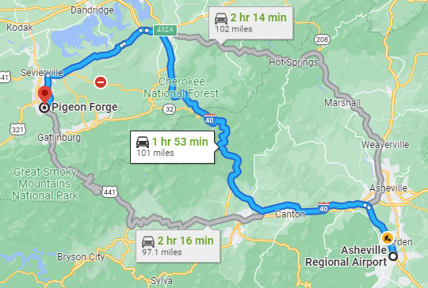
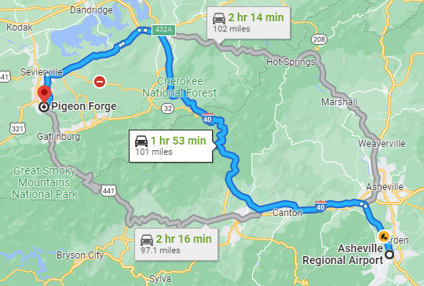

How to Get There
Driving
Detroit to Pigeon Forge takes about 8 1/2 hours (aka 1 bathroom break- Mark). It's a straight shot down I-75 for most of the way.
Detroit to Pigeon Forge takes about 8 1/2 hours (aka 1 bathroom break- Mark). It's a straight shot down I-75 for most of the way.
Flying
Knoxville
The Knoxville Airport (TYS) is the closest airport to Pigeon Forge, taking about one hour to get from the airport to the venue.
Knoxville is a medium-sized airport with car rental available on-site. If you are flying from Detroit, there is typically a direct flight straight to Knoxville.
We will be hanging out in Knoxville on Thursday if you'd like to join us.

Directions
Knoxville
The Knoxville Airport (TYS) is the closest airport to Pigeon Forge, taking about one hour to get from the airport to the venue.
Knoxville is a medium-sized airport with car rental available on-site. If you are flying from Detroit, there is typically a direct flight straight to Knoxville.
We will be hanging out in Knoxville on Thursday if you'd like to join us.

Directions
Asheville
Asheville is another great option, the airport (AVL) is about 2 hours away from Pigeon Forge, and the town of Asheville is an amazing.
If you are planning to bundle a vacation with the wedding, Asheville has a lot to offer with great restaurants, hiking, and the Biltmore. (It's also where Mark's Parents live ❤)
The drive from Asheville to Pigeon Forge takes you through the mountains, which is either a plus or minus depending on who you are.

Directions
Asheville is another great option, the airport (AVL) is about 2 hours away from Pigeon Forge, and the town of Asheville is an amazing.
If you are planning to bundle a vacation with the wedding, Asheville has a lot to offer with great restaurants, hiking, and the Biltmore. (It's also where Mark's Parents live ❤)
The drive from Asheville to Pigeon Forge takes you through the mountains, which is either a plus or minus depending on who you are.

Directions
Other Airports
Some of the larger and cheaper airports to fly into, especially when doing international travel include:
Greenville Spartanburg (GSP) - 2 hours and 45 Minutes
Nashville (BNA) - 3 Hours and 30 Minutes
Charlotte (CLT) - 3 Hours and 30 Minutes
Atlanta (ATL) - 4 Hours
Some of the larger and cheaper airports to fly into, especially when doing international travel include:
Greenville Spartanburg (GSP) - 2 hours and 45 Minutes
Nashville (BNA) - 3 Hours and 30 Minutes
Charlotte (CLT) - 3 Hours and 30 Minutes
Atlanta (ATL) - 4 Hours
Where to Stay
Tru by Hilton
Our first recommendation for hotel is tru by Hilton, it is a relativly new hotel with great amenities.
We plan(* hopefully) to have a shuttle pick up from this location, and drop of to this location
This option is a medium price point of our reccomendation.
Website
Our first recommendation for hotel is tru by Hilton, it is a relativly new hotel with great amenities.
We plan(* hopefully) to have a shuttle pick up from this location, and drop of to this location
This option is a medium price point of our reccomendation.
Website
The Inn on the River
Our second recommendation for hotel is The Inn on the River, it has a great location (next door to rehursal dinner).
This option is the most affordable price, though it is on the main strip so traffic can be bad.
Website
Our second recommendation for hotel is The Inn on the River, it has a great location (next door to rehursal dinner).
This option is the most affordable price, though it is on the main strip so traffic can be bad.
Website
DreamMore Resort & Spa
Our final recommendation for hotel is Dollywood DreamMore Resport & Sap, this place is the nicest accomidation and has an a huge indoor pool and lots of spa services
If your willing to overlook (or excited) by the Dollywood theme this would be our recomendation for hotel.
Though this is the most expensive option for hotel it well worth it, especially if you had kids to entertain.
Website
Our final recommendation for hotel is Dollywood DreamMore Resport & Sap, this place is the nicest accomidation and has an a huge indoor pool and lots of spa services
If your willing to overlook (or excited) by the Dollywood theme this would be our recomendation for hotel.
Though this is the most expensive option for hotel it well worth it, especially if you had kids to entertain.
Website
Cabin Rentals
If you want to stay in the Mountains we reccomend getting a cabin.
There are options from small couple cabins to 8 bedroom cabins. (and everything inbetween)
Below are some options. ** Please note that some cabin rentals have 3 night stay minimums.
Sherwood Forest Resorts
Parkside Resort
If you want to stay in the Mountains we reccomend getting a cabin.
There are options from small couple cabins to 8 bedroom cabins. (and everything inbetween)
Below are some options. ** Please note that some cabin rentals have 3 night stay minimums.
Sherwood Forest Resorts
Parkside Resort
Or find your own!
There are only our recommendations, there are TONS of places to stay in and around Pigeon Forge!
Pick what is right for you!
There are only our recommendations, there are TONS of places to stay in and around Pigeon Forge!
Pick what is right for you!
Things to Do
Venue
We will be getting married at the beautiful Magnolia Wedding Venue in Pigeon Forge. The property is perched on the edge of a mountain, offering breathtaking views of the smokies, but also requiring some expert driving skills to get up the steep hill. Since there is limited parking at the venue as well, we will be providing a shuttle to get you to and from the venue (more on this in the "Parking" section).
The ceremony will be held outside, weather permitting, on the Ceremony Patio with heaters. If it is raining or heavily snowing, the ceremony will be held in the Grand Hall, right next door. Please bring a coat, or dress appropriately for the weather. Before the ceremony, feel free to visit the warm-up bar in the covered patio for a coffee or tea to sip on during the ceremony.
Cocktail Hour will be under the covered patio, about 100 feet away from the ceremony site, and will be heated as well. This is also where the bathrooms are located. The bridal suite is in the same building as the bathrooms, attached to the covered patio. During the reception, it will be converted into a nursing room.
The reception will be in the Grand Hall, right next to the ceremony patio. The Grand Hall is an indoor venue with vaulted ceilings, a chandelier, and floor-to-ceiling windows.
The ceremony will be held outside, weather permitting, on the Ceremony Patio with heaters. If it is raining or heavily snowing, the ceremony will be held in the Grand Hall, right next door. Please bring a coat, or dress appropriately for the weather. Before the ceremony, feel free to visit the warm-up bar in the covered patio for a coffee or tea to sip on during the ceremony.
Cocktail Hour will be under the covered patio, about 100 feet away from the ceremony site, and will be heated as well. This is also where the bathrooms are located. The bridal suite is in the same building as the bathrooms, attached to the covered patio. During the reception, it will be converted into a nursing room.
The reception will be in the Grand Hall, right next to the ceremony patio. The Grand Hall is an indoor venue with vaulted ceilings, a chandelier, and floor-to-ceiling windows.
Parking
Parking for the wedding will be at the Smoky Mountain Ziplines, located at 509 Mill Creek Road, in Pigeon Forge. The shuttle will pick people up from that parking lot and take you up the large hill to the venue, and bring you back down at the end of the night.
We are also planning to have the shuttle pick up from tru by Hilton, if several of our guests are staying there. A shuttle schedule will be posted closer to the wedding date when we find out where everyone is staying.
We are also planning to have the shuttle pick up from tru by Hilton, if several of our guests are staying there. A shuttle schedule will be posted closer to the wedding date when we find out where everyone is staying.